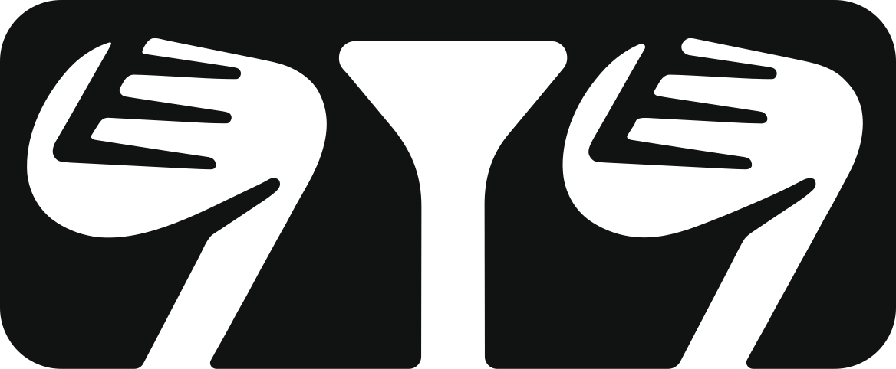
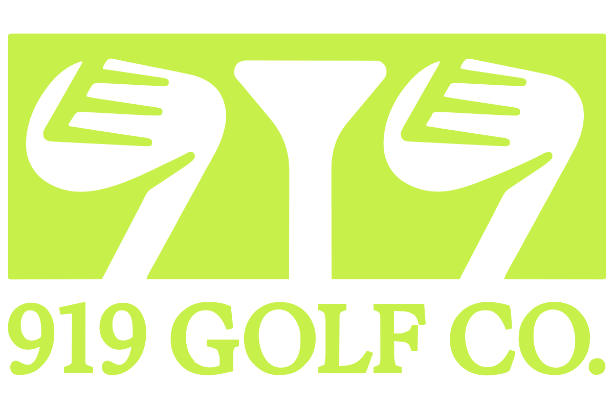
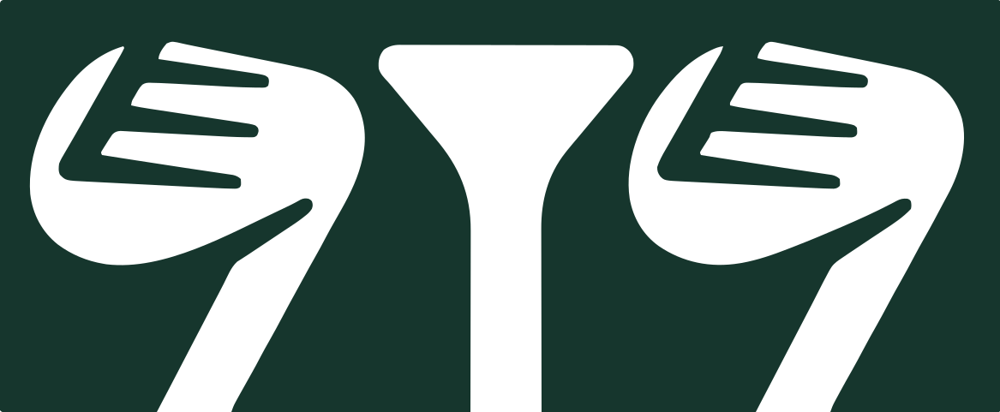
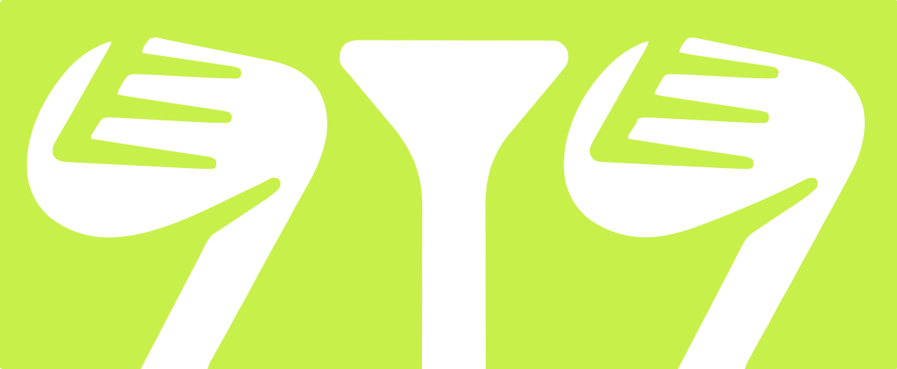

Round mark — now used everywhere
The original mark sits in a hard-edged rectangle, which fought every rounded container it was placed in. This round version solves it properly — the internal shapes were redrawn to follow the radius rather than just being clipped, so nothing looks cut off. It's now the logo across all six directions.
919-round-lockup.svgon darkaccenton greenStacked variant
Round mark with the wordmark below it. Too tall for a website header — it would force the nav bar to roughly double in height — but it is the right shape anywhere square-ish: social avatars, a printed flyer, event signage, a business card, an email signature, or a watermark on photos.
social / print
on darkaccentIcon only
The round mark on its own is a much better favicon and social avatar than the old square block — browser tabs and profile pictures are round or rounded, so a hard rectangle always looked pasted in.

faviconavataraccentBefore & after
square blockin use nowColor variants
Your SVG is a single path in a single color, which is about as clean as a logo file gets. Every version below was generated from it — same artwork, one line changed.
#16362D
#F7F4EC#C9A227
#C8F04A#FFFFFF#0B0D0CHorizontal lockup — built
Your logo is stacked (icon above the wordmark), which looks great large but goes unreadable in a website header. So I rebuilt it as a horizontal lockup from your own artwork — nothing redrawn, just rearranged. This is the version used in the header of all three mockups.
919-lockup-h.svgon dark greenon black
on greenIcon only
The mark on its own — for favicons, social avatars, and anywhere square.

favicon
avatar
avatarfill value. You are not locked into the green at all, and every file above took seconds to produce. Had it stayed a flattened PNG this would have been fiddlier, though still doable since it is one flat color.
Recolor with one file
If you want the logo to change color dynamically rather than shipping a file per color, currentColor lets CSS drive it.
/* 919-logo-currentcolor.svg inherits whatever color you set */ .site-header .logo { color: #F7F4EC; } /* cream in the header */ .site-footer .logo { color: #16362D; } /* green in the footer */
currentColor in mind for anywhere the color has to change on the fly.